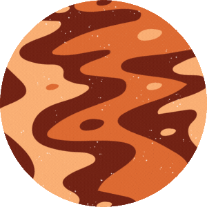
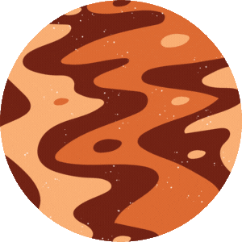
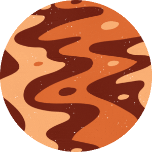

Gallery

:max_bytes(150000):strip_icc()/1024px-Venus_globe-5a88ae823de423003738f750.jpg) 

Venus is the 2nd planet from the Sun and is often called Earth's "sister planet" due to their similar size and composition. However, Venus has a thick atmosphere composed mainly of carbon dioxide, with clouds of sulfuric acid, making it the hottest planet in the Solar System. Venus rotates in the opposite direction to most planets in the Solar System, a phenomenon known as retrograde rotation.
Did you know that since Venus is covered in a dense layer of carbon dioxide and sulfur clouds - so much so that it is reflexive to visible light, making it the brightest object in the sky after the Sun and the Moon? The actual Venus surface is rocky, mountainous, and orange due to the presence of iron oxide.
